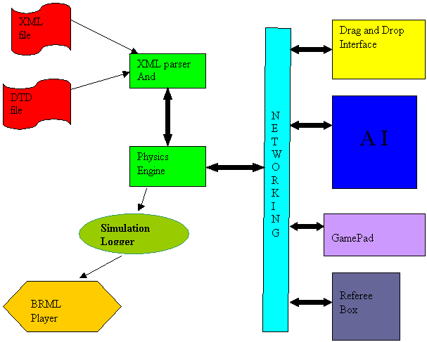

Architecture of the simulator
The simulator consists of 7 main parts. They are:
- The Physics Engine,
- The XML Parser & Validator,
- The networking interface,
- The logger
- Drag and Drop Interface
- Referee Box
- GamePad

Below is a brief description of how the simulator works:
- A Xml file is written by the user to describe the world that is being simulated. The tags used in the xml file should follow the syntax and semantics described in the DTD file.
- The Xml file is passed into the parser. The parser validates if the Xml file really followed the grammar specified in the DTD. If it finds something invalid it gives an error message else it creates a DOM tree from the xml file.
- The parser is enhanced to traverse through the DOM tree and store data in data-structures that comply with the Physics Engine.
- The physics engine starts with the initial state as described in the xml-file.
- The networking interface between the physics engine and AI is started and connection is established between the two.
- A loop is started. The Physics engine first sends it state to the AI. Then it receives data from AI. The physics engine calculates the next state and then sends the new state to the AI. This loop goes on at a frame rate specified by the user in the XML file.
- Every state starting from the initial state is logged in a file in BRML format.
- The BRML player can play the logged BRML file if we want to observe a previously done simulation again. This helps in debugging as well as improvising the design. It is like a football team watching its previous games to know where it made mistakes.
- The simulator can be connected with GamePad instead of AI too. GamePad lets you control the robots with joysticks.
- The drag and drop interface is a GUI which shows the robots and field and their motion. It also lets us add and remove robots and drag and drop robots to the location we want.
- The referee box will be an external entity that can be connected to the simulator. It will act as a referee for the game. It can also play the role of a coach if the user wants to.